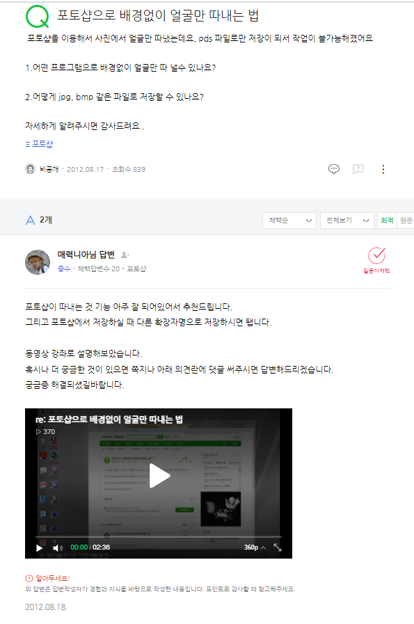

(2012) 카카오톡 초기 사용 단계에서 원하는 테마 사용을 하고 싶어서 처음 포토샵을 사용해보게 되었다.
원하는 사진을 png 파일 형식으로 바꾸어 만들어야 했는데 어려움을 겪어서 네이버 지식인에 글을 올렸다.
친절하게 동영상으로 답글을 달아준 사람 덕분에 테마를 만들 수 있었다.
포토샵이 친근하게 사용할 수 있다는 점을 깨달았고 그때부터 포토샵이나 영상제작 등에 흥미를 가지게 되었다.
 ▶당시 올렸던 네이버 지식in 질문과 답변..ㅋㅋㅋ